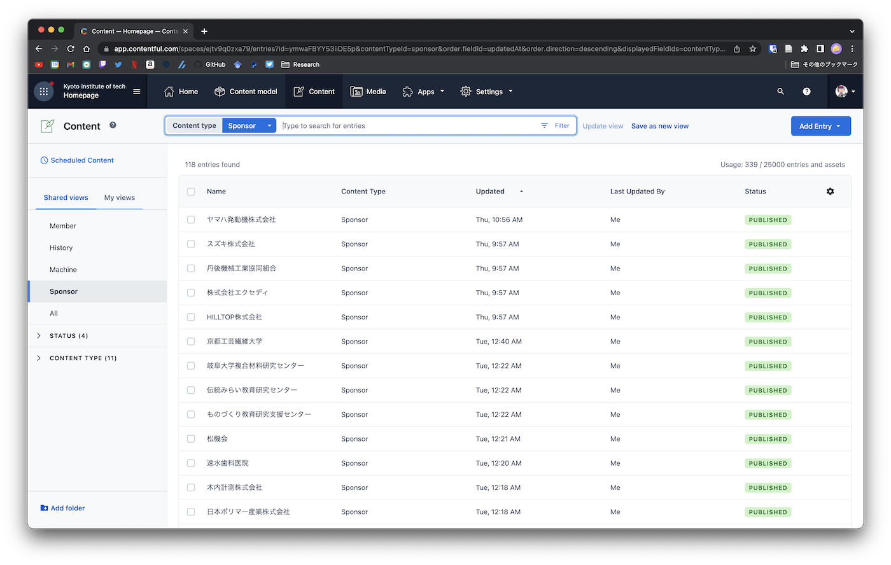
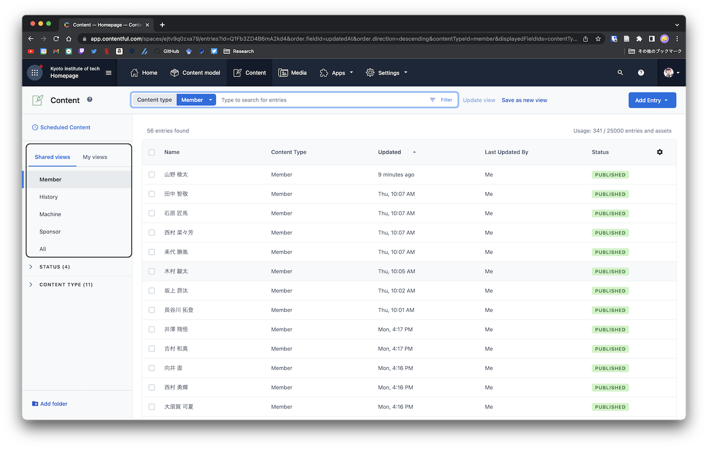

ホームページ管理
サークルのホームページはNetlifyとGraphCMSというサービスを利用しています．
2022/9/24: NetlifyとContentfulに切り替えました
本ページでは，主にコンテンツを管理しているContentfulについて解説します．
ログイン方法
contentful.comにアクセスし，右上のLoginからログインできます．
ログインに必要なIDとパスワードはここにあります．
新規作成
左側の上から3番目のアイコンであるContentから追加，削除等を行うことができます．

新しくデータを追加する時は，右上のAdd Entryから追加できます．
削除，編集
コンテンツ一覧から削除したい，または非表示にしたいものにチェックボックスを入れ，
非表示にしたい場合はUnpublish
公開していないもの，または再度表示させたい場合はPublish
を選択することで表示の管理を行うことができます．

表示カテゴリの選択
左のタブから表示するカテゴリを選べます
- Member
- History
- Machine
- Sponsors
- All
